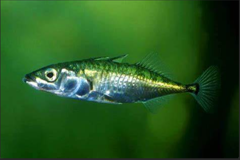
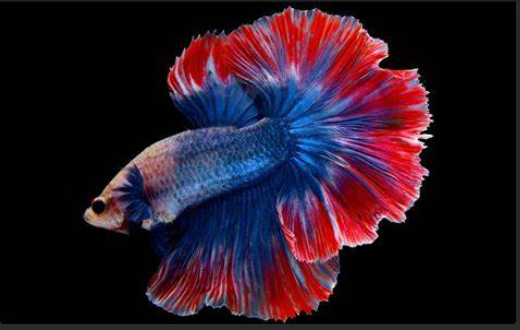
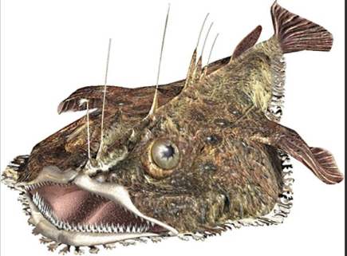

les poissons pondent des oeufs et les abandonnent souvent au gré des courants mais certains poissons fabriquent des nids
 Dans la famille des épinoches à gauche, les papas construisent les nids et poussent les femelles à pondre dedans. Le poissons appelé "combattant" à droite fait un nid des bulles d'air qu'il rejette de sa bouche
La lotte ne construit pas de nid mais dépose ses oeufs à l'abri dans des objets trouvé au fond de la mer